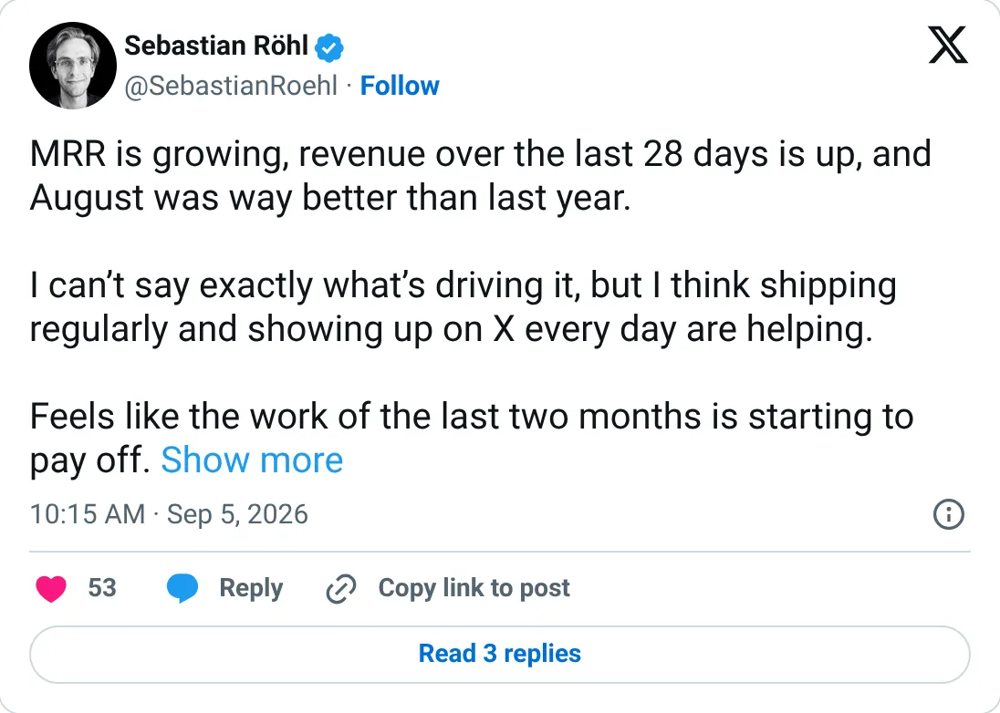

Not a pick
HabitKit
The ledger looks real. It is not one of the clearer things to start next.
$32.5K MRR
Should you build this
The money looks real, and it is still not a recommendation to start a copy. HabitKit's TrustMRR entry is a single MRR snapshot, last synced September 9, 2026, at $32.5K. There is no revenue history, so a launch spike or annual plan would be invisible. The founder's nearby post says MRR is growing and August beat the year before, which does not quote a bigger number than the snapshot. Thin, slightly stale, and still a processor figure rather than a claim.
Cited from the captured posts, shown below: the key post (Sep 5, 2026) is the source for “Founder: MRR growing; August was much better than last year”.
Posts this is based on

Founder: MRR growing; August was much better than last year
Open on X
What the product is
Privacy-friendly habit tracker app for iOS, Android and web, built by a solo developer in Germany who writes a weekly "Building An Indie App Business" newsletter.
⚠ Thin: TrustMRR only shows an MRR snapshot (last synced Sep 9, 2026), with no revenue history.